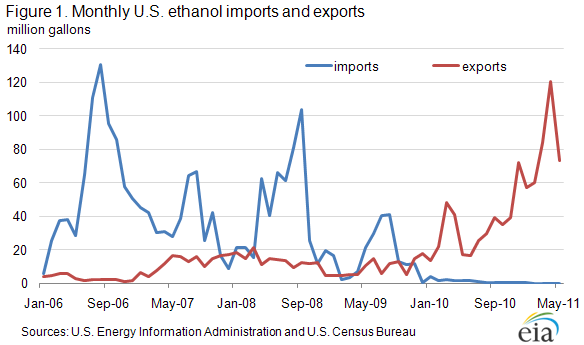
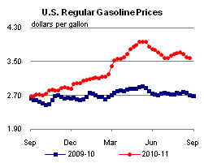
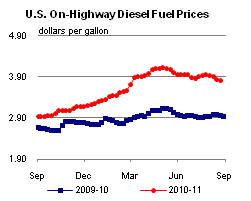
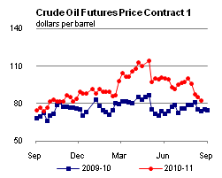
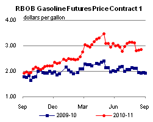
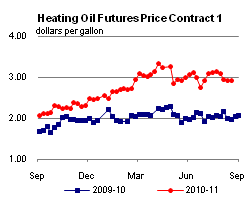
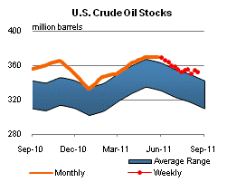
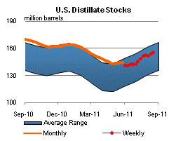
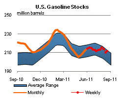
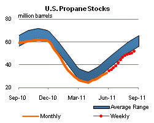

Released: August 24, 2011
Next Release: August 31, 2011
The United States: From Ethanol Importer to Ethanol Exporter
After being a significant importer of ethanol in the 2006 through 2008 period, the United States became a significant exporter of ethanol in 2010 and the early part of 2011. As discussed below, the changing direction of ethanol trade flows in recent years has reflected both policy and market factors. Looking forward, Federal and State policies could drive a future in which the United States imports significant volumes of sugarcane ethanol from Brazil at the same time it continues to export corn-based ethanol to Brazil and other countries.
Significant ethanol imports in the 2006 to 2008 period reflected a decision taken by refiners, spurred by provisions of the Energy Policy Act of 2005, to eliminate the use of methyl tertiary butyl ether (MTBE) as a component of reformulated gasoline in the spring of 2006. The rapidly rising price of oil from the 2006 to mid-2008 period also provided an increasingly strong economic incentive to blend ethanol into conventional gasoline sold in areas not subject to reformulated gasoline requirements. The Volumetric Ethanol Excise Tax Credit (VEETC), which currently provides blenders with a tax credit of $0.45 per gallon of ethanol blended into gasoline, and provided a somewhat larger tax credit over the same period, was a significant driver of economically-motivated ethanol blending.
The Renewable Fuel Standard (RFS), enacted as part of the Energy Policy Act of 2005 and subsequently strengthened by the Energy Independence and Security Act of 2007, established mandates for renewable fuel use in the transportation sector. The RFS mandates, which were not binding in the early years of the RFS program, rise rapidly over time. The implicit mandate for conventional ethanol produced from corn and other starch crops is about 12.6 billion gallons in 2011 and 13.2 billion gallons in 2012. U.S. fuel ethanol production capacity and production has risen rapidly in recent years, with production surpassing 13 billion gallons in 2010.
Nearly all fuel ethanol currently used in the United States is consumed as a blend with gasoline in volumes containing up to 10 percent ethanol (E10), which until late 2010 was the legal limit for ethanol blends sold for use in vehicles designed to run on gasoline. As ethanol use has grown, the market for E10 blending has neared the saturation point, also known as the ethanol blend wall . In October 2010 and January 2011, the EPA issued waivers allowing for the use of ethanol blends up to 15 percent (E15) in vehicles manufactured after 2000, but concerns over potential mis-fueling, associated liabilities, and other issues continue to pose significant near-term barriers to the marketing of E15. Similarly, growth in sales of ethanol as E85 (85% ethanol, 15% gasoline), is restricted in the near term by the number of flex-fueled vehicles that can burn this fuel and the limited availability of E85 refueling stations. With ethanol production rising and domestic markets beyond E10 still facing significant short-term limits, U.S. producers have found relief through opportunities for exports (Figure 1).

In 2009, a number of factors such as decreased corn prices and increased sugar prices contributed to a reduction in ethanol imports from Brazil and Caribbean Basin Initiative (CBI) countries. With more favorable economics and an increasing supply, the United States even began exporting small volumes to Brazil in late 2009 and boosted existing exports to Canada.
In 2010, the United States became a significant net exporter of ethanol, adding shipments to Europe, India, and Mexico as well as expanding existing shipments to Brazil and Canada. U.S. ethanol export growth was spurred by a relaxation of trade restrictions by partner countries. Brazil, facing domestic ethanol supply shortages as a result of lower sugarcane production and more profitable sugar prices compared to ethanol, eliminated its own 20% ad valorem import duty through at least 2011. At the same time, E90 exports to Europe may have benefited from both the U.S. blending tax credit ($0.45 per gallon of ethanol) and lower European import duties on ethanol/gasoline blends (compared to pure ethanol imports). Through the first five months of 2011, continuously growing volumes of ethanol have been exported to Brazil, Canada, Europe, Jamaica, and the United Arab Emirates. Over this period, U.S. ethanol exports more than doubled compared to the same period in 2010. For the remainder of 2011, it is likely that the United States will surpass Brazil as the world's largest ethanol exporter due to recent supply shortages and resulting high sugar prices in Brazil. U.S. ethanol has been relatively less expensive and has supplied markets that previously imported Brazilian ethanol.
Looking forward, prospects for U.S. ethanol exports will depend in part on the ability of the U.S. transportation fuels market to absorb additional volumes of ethanol in the form of E15 and/or E85. All else equal, E15 is likely to be a more economically attractive market to domestic ethanol producers. Future developments in agricultural markets for corn and sugar will continue to impact the direction and magnitude of ethanol trade flows. Oil market developments will also be a factor, reflecting the fact that Brazil and some other important global markets allow consumers to choose between renewable and non-renewable motor fuels based on economic criteria.
Finally, Federal and State-level policies in the United States will continue to play an important role in ethanol trade. Besides policies regarding tariffs and subsidies, which directly impact trade, the details of renewable fuels policies are significant. For example, under regulations implementing California's Low Carbon Fuel Standard (LCFS), Brazilian sugarcane ethanol has a much lower carbon value than domestic corn-based ethanol, which significantly favors its use by refiners seeking to meet their obligation to reduce the carbon content of their fuels under the LCFS program. Similarly, Brazilian sugarcane ethanol, unlike domestic corn-based ethanol, qualifies as an "advanced biofuel" under the RFS program. In a setting where production of cellulosic biofuel that also counts as advanced biofuel is expected to fall well short of the level specified in the legislation establishing the RFS, the U.S. Environmental Protection Agency (EPA) specifically identified increased imports of Brazilian sugarcane ethanol as one of the most likely sources of compliance with the requirement for advanced biofuels in 2012 in its recent proposed rule for implementation of the RFS program in 2012. In this context, it is not hard to envision a scenario in which the United States continues to export corn-based ethanol to Brazil while at the same time importing sugarcane ethanol from Brazil to comply with California LCFS and Federal RFS requirements.
Gasoline and diesel prices fall
The U.S. average retail price of regular gasoline fell for the third consecutive week, shedding more than two cents to reach $3.58 per gallon. The average price is $0.88 per gallon higher than last year at this time. The largest decrease came on the East Coast where prices were down four cents on the week. The average price on the Gulf Coast was down almost three cents to $3.46 per gallon, the lowest regional price in the country. The Midwest retail gasoline price lost more than one cent for the week, while prices both on the West Coast and in the Rocky Mountains managed small declines of less than a penny. West Coast gasoline is the most expensive in the country, averaging $3.69 per gallon.
The national average diesel price fell for the fourth consecutive week, dropping two and a half cents to $3.81 per gallon. The diesel price is $0.85 per gallon higher than last year at this time. Like gasoline, diesel prices were lower in all of the major regions. Leading the way, the Gulf Coast registered a more than three-cent decline on the week. Both the East Coast and Midwest average diesel prices fell almost three cents against last week. The Rocky Mountain average price moved a penny lower, while the West Coast price was down just under a cent.
Propane inventories remain below typical seasonal levels
Last week, U.S. inventories of propane grew for the eighteenth consecutive week, adding 1.7 million barrels of new stocks to end at 52.0 million barrels total. However, stocks are currently almost 15 percent lower than the same week last year and almost 13 percent lower than the 5-year average level for this time of year. The largest gain occurred in the Midwest region with 1.6 million barrels of new stocks. The East Coast and Rocky Mountain/West Coast regions each gained 0.1 million barrels. The Gulf Coast regional inventories fell by 0.1 million barrels. Propylene non-fuel use inventories represented 4.4 percent of total propane inventories.
Text from the previous editions of This Week In Petroleum is accessible through a link at the top right-hand corner of this page.
|  |  | ||||||
| Retail Data | Changes From | Retail Data | Changes From | ||||
| 08/22/11 | Week | Year | 08/22/11 | Week | Year | ||
| Gasoline | 3.581 | Diesel Fuel | 3.810 | ||||
|  |  | ||||||||||||||||||||||||||
|
 | ||||||||||||||||||||||||||
| *Note: Crude Oil Price in Dollars per Barrel. | |||||||||||||||||||||||||||
|  |  | ||||||
|  |  | ||||||
| Stocks Data | Changes From | Stocks Data | Changes From | ||||
| 08/19/11 | Week | Year | 08/19/11 | Week | Year | ||
| Crude Oil | 351.8 | Distillate | 155.7 | ||||
| Gasoline | 211.4 | Propane | 52.045 | ||||